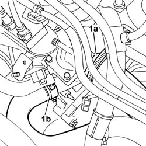
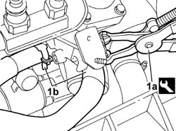
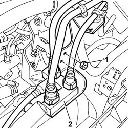
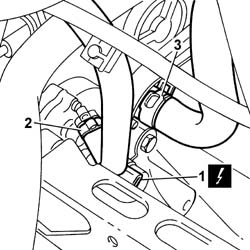
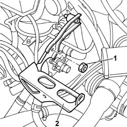
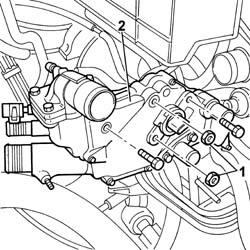
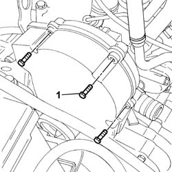
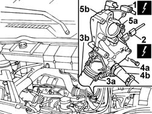

1088C30 THERMOSTAT UNIT - R+R
- Path
- Procedures > 10 ENGINE UNIT > 1088 ENGINE COOLING > 1088C WATER PUMP AND THERMOSTAT > 1088C30 THERMOSTAT UNIT - R+R
- Kind
- repair procedure (removal / refitting; the operation number is the code)
- Applies to
- engines: 2.0 16V, 2.0 JTD 8V, 2.3 JTD 16V; all production periods
- Interactive page
- https://sloeber94.github.io/elrnDB-fDct/en/#/244000952
Applies to: engines: 2.0 JTD 8V; all production periods
 Removing
Removing
 Refitting
Refitting- Position the vehicle on the lift.
Op. 7055B54 UNDER-ENGINE GUARD - R R
See in Op. 1048A21
See in Op. 1048A50
Op. 1048B16 PIPES AND/OR ELBOW BETWEEN TURBOCHARGER AND THROTTLE CASING - R.R.
Op. 1048B12 RIGID PIPE CARRYING AIR BETWEEN TURBOCHARGER AND INLET MANIFOLD - R+R
- Position a suitable container for collecting the coolant.
1. Disconnect the upper hose (1a) and the lower hose (1b) from the thermostat.

Applies to: engines: 2.0 JTD 8V; all production periods
1. Using suitable pliers, open the bands retaining the coolant supply and return pipes to the engine oil heat exchanger.
 | Description | Code | Function |
|---|---|---|---|
. | Caliper | 1.831.138.000 | Band opening |

Applies to: engines: 2.0 JTD 8V; all production periods
1. Undo the bolts fixing the fuel return manifold mounting bracket.
2. Release the return manifold from the housing and place it outside of the work area.

Applies to: engines: 2.0 JTD 8V; all production periods
1. Disconnect the electrical connection for the water temperature sensor.
 | Description | Connector |
|---|---|---|
1 | Engine coolant temperature sensor/sender unit | K036 |
2. Disconnect the recirculation pipe.
3. Disconnect the water pipe to the exhaust gas heat exchanger from the thermostat.

Applies to: engines: 2.0 JTD 8V; all production periods
1. Undo the fixing nuts.
2. Remove the turbocharger air outlet rigid pipe mounting bracket.

Applies to: engines: 2.0 JTD 8V; all production periods
1. Undo the fixing nuts and bolts.
2. Remove the thermostat unit from the housing in the cylinder head.

Applies to: engines: 2.0 JTD 8V; all production periods
Refitting
Removing- Fit the thermostat in the housing in the cylinderhead checking that it is correctly engaged with the rigid coolant pipe and tighten the fixing nuts and bolts to torque.
 | Value - daNm | Fastening | Component | Ø |
|---|---|---|---|---|
. | 2 | bolt | CONTAINER GR. THERMOSTAT | - |
| Value - daNm | Fastening | Component | Ø |
|---|---|---|---|---|
. | 2 | Nut | CONTAINER GR. THERMOSTAT | - |
- Fit the turbocharger rigid air outlet pipe mounting bracket and tighten the fixing nuts.
- Connect the water pipe to the exhaust gas heat exchanger to the thermostat.
- Connect the recirculation pipe.
- Connect the electrical connection for the water temperature sensor.
| Description | Connector |
|---|---|---|
. | Engine coolant temperature sensor/sender unit | K036 |
- Place the return manifold in position and tighten the fixing bolts.
- Using suitable pliers, close the bands retaining the coolant supply and return pipes to the engine oil heat exchanger.
| Description | Code | Function |
|---|---|---|---|
. | Caliper | 1.831.138.000 | Band opening |
- Connect the upper hose and the lower hose to the thermostat.
Op. 1048B12 RIGID PIPE CARRYING AIR BETWEEN TURBOCHARGER AND INLET MANIFOLD - R+R
Op. 1048B16 PIPES AND/OR ELBOW BETWEEN TURBOCHARGER AND THROTTLE CASING - R.R.
See in Op. 1048A50
See in Op. 1048A21
Op. 0010T20 COOLANT CHECK DENSITY AND TOP UP IF NECESSARY
Op. 7055B54 UNDER-ENGINE GUARD - R R
- Remove the vehicle from the lift.
Applies to: engines: 2.3 JTD 16V; all production periods
Removing
RefittingOp. 7055B54 UNDER-ENGINE GUARD - R R
See in Op. 1088D18
1. Undo the upper and side bolts securing the timing belt protective cover.

Applies to: engines: 2.3 JTD 16V; all production periods
1. Disconnect thermostat electrical connections (1a) and (1b).
| Description | Connector |
|---|---|---|
1a | Coolant temperature sending unit (for instrument panel) | K035 |
| Description | Connector |
|---|---|---|
1b | Engine coolant temperature sensor/sender unit | K036 |
2. Undo the bolts securing the thermostat to the cylinder head.
3. Remove the thermostat unit from the cylinder head.

Applies to: engines: 2.3 JTD 16V; all production periods
Refitting
Removing- Change the thermostat o-ring.
- Fit the thermostat unit in its seat on the cylinder head.
- Tighten the bolts securing the thermostat to the cylinder head to torque.
| Value - daNm | Fastening | Component | Ø |
|---|---|---|---|---|
. | - | Bolts | THERMOSTAT | - |
- Connect the electrical connections for the thermostat.
| Description | Connector |
|---|---|---|
. | Coolant temperature sending unit (for instrument panel) | K035 |
| Description | Connector |
|---|---|---|
. | Engine coolant temperature sensor/sender unit | K036 |
- Tighten the upper and side bolts securing the timing belt protective cover.
See in Op. 1088D18
Op. 0010T20 COOLANT CHECK DENSITY AND TOP UP IF NECESSARY
Applies to: engines: 2.0 16V; all production periods
Removing
Refitting- Disconnect the negative battery terminal.
See in Op. 1048A21
Op. 1048A39 SLEEVE FROM AIR CLEANER TO RIGID PIPE - R R
Op. 5510C10 IGNITION COIL/S - R+R
Op. 7055B54 UNDER-ENGINE GUARD - R R
- Position a suitable container for collecting the coolant.
- Lower the vehicle.
1. Disconnect the electrical connection for the cam angle sensor.
2. Disconnect the electrical connection for the engine coolant temperature sensor.
3. Remove the band (3a) and relese the coolant oulet hose from the thermostat (3b).
4. Remove the band (4a) and release the heater coolant supply pipe (4b).
5. Undo the retaining bolts (5a) and remove the thermostat unit (5b).

Applies to: engines: 2.0 16V; all production periods
Refitting
Removing- Fit the thermostat unit in place.
- Tighten the fixing bolts to the recommended torque.
- Fit the thermostat unit inlet and outlet hoses and restore the bands removed previously.
- Connect the electrical connection for the cam angle sensor.
- Connect the engine coolant temperature sensor electrical connection.
Op. 7055B54 UNDER-ENGINE GUARD - R R
See in Op. 1048A21
Op. 1048A39 SLEEVE FROM AIR CLEANER TO RIGID PIPE - R R
Op. 5510C10 IGNITION COIL/S - R+R
Op. 0010T21 COOLANT CHECK DENSITY AND TOP UP IF NECESSARY
- Connect the negative battery terminal.
Topics linked from this page (7)
- 0010T20 COOLANT CHECK DENSITY AND TOP UP IF NECESSARY
- 0010T21 COOLANT CHECK DENSITY AND TOP UP IF NECESSARY
- 1048A39 SLEEVE FROM AIR CLEANER TO RIGID PIPE - R R
- 1048B12 RIGID PIPE CARRYING AIR BETWEEN TURBOCHARGER AND INLET MANIFOLD - R+R
- 1048B16 PIPES AND/OR ELBOW BETWEEN TURBOCHARGER AND THROTTLE CASING - R.R.
- 5510C10 IGNITION COIL/S - R+R
- 7055B54 UNDER-ENGINE GUARD - R R